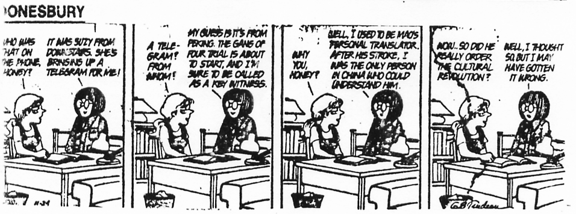

ccording to a radio report heard today on NPR it seems, President Putin became angry at a reporter asking questions about Chechnya. Putin responded with a tirade about having the reporter step forward for permanent genital mutilation. It seems the various interpreters were so surprised at the comments that they simply left them out of their interpretation. Interesting.
ccording to a radio report heard today on NPR it seems, President Putin became angry at a reporter asking questions about Chechnya. Putin responded with a tirade about having the reporter step forward for permanent genital mutilation. It seems the various interpreters were so surprised at the comments that they simply left them out of their interpretation. Interesting.
- November 15, 2002
 adonna was in Budapest filming some scenes from the movie "Evita" and the Budapest newspaper "Blikk" interviewed her. The questions were posed in Hungarian, then translated into English for her; her replies were then translated back into Hungarian. Then "USA Today" wanted a copy of it.
adonna was in Budapest filming some scenes from the movie "Evita" and the Budapest newspaper "Blikk" interviewed her. The questions were posed in Hungarian, then translated into English for her; her replies were then translated back into Hungarian. Then "USA Today" wanted a copy of it.
So. . . the Hungarian version was retranslated from Hungarian back into
English for "USA Today" who only published part of it all. This is the
whole version from the re-translation.
BLIKK: Madonna, Budapest says hello with arms that are spread-eagled.
Did you have a visit here that was agreeable? Are you in good odor? You
are the biggest fan of our young people who hear your musical productions
and like to move their bodies in response.
MADONNA: Thank you for saying these compliments {holds up hands}. Please
stop with taking sensationalist photographs until I have removed my
garmets for all to see. This is a joke I have made.
BLIKK: Madonna, let's cut toward the hunt: are you a bold hussy-woman
that feasts on men who are tops?
MADONNA: Yes, yes, this is certainly something that brings to the
surface my longings. In American it is not considreed to be mentally ill
when a woman advances on her prey in a discotheque setting with hardy
cocktails present. And there is a more normal attitude toward leather
play-toys that also makes my day.
BLIKK: Is this how you met Carlos, your love-servant who is reputed?
Did you know he was heaven-sent right off the stick? Or were you dating
many other people in your bed at the same time?
MADONNA: No, he was the only one I was dating in my bed then, so it is a
scientific fact that the baby was made in my womb using him. But as
regards those questions, enough! I am a woman and not a test-mouse!
Carlos is an everyday person who is in the orbit of a star who is being
muscled-trained by him, not a sex machine.
BLIKK: May we talk about your other "baby," your movie then? Please do
not be denying that the similarities between you and the real Evita are
grounded in basis. Power, money, tasty food, Grammys -- all these
elements are afoot.
MADONNA: What is up in the air with you? Evita never was winning a
Grammy!
BLIKK: Perhaps not. But as to your film, in trying to bring your
reputation along a rocky road, can you make people forget the bad
explosions of "Who's That Girl?" and "Shanghai Surprise?"
MADONNA: I am a tip-top starlet. That is my job that I am paid to do.
BLIKK: OK, here's a question from left space. What was your book "Slut"
about?
MADONNA: It was called "Sex", my book.
BLIKK: Not in Hungary. Here it was called "Slut." How did it come to
publish. Were you lovemaking with a man-about-town printer? Do you
prefer making suggestive literature to fast-selling CDs?
MADONNA: There are different facets to my career highway. I am
preferring only to become respected all over the map as a 100% artist.
BLIKK: There is much interest in you from this geographic region, so I
must ask this final questions: How many Hungarian men have you dated in
bed? Are they No. 1? How are they comparing to Argentine men, who are
famous being tip-top as well?
MADONNA: Well, to avoid aggravating global tension, I would say it's a
tie (laugh). No, no. I am serious now. See here, I am working like a
canine all the way around the clock! I have been too busy to try the
goulash that makes your country one for the record books.
BLIKK: Thank you for the candid chitchat.
MADONNA: No problem, friend who is a girl.

 he machine model
he machine model
A cheap computer "translating" program recently gave the following renditon from English to Spanish:
"Sincerely, William D. Haddock" became
"Sinceramente, Guillermo D. pez semejante al bacalao (a fish)"
 llegal trafficking is verboten!
llegal trafficking is verboten!
Setting: European School in Brussels, c. 1980.
Parents Association meeting.
Evening, everyone tired.
Parents ask questions in German. German is notorious for verbs, indications of negatives, and sometimes other relevant information being, not infrequently, at the end of what may be a very long sentence. This clearly has implications for hapless interpreters.
Question (literally): Can you me tell when my daughter will XXXeducation also now in first year receive? [Note to those who know German - a) I can't quite remember the syntax, but the reference to the year of his daughter - first year corresponding to age 6 - was certainly a long way off in the sentence, b) the word was Verkehrsunterricht.]
Background: Belgium is not a country noted for its road safety awareness.
The word used, "Verkehr", means "traffic", and just as "intercourse" (or indeed, sometimes "congress") may or may not be of a sexual variety, so too Verkehr may sometimes mean sexual traffic, i.e. sex ->sex education, for Verkehrsunterricht in this context or alternatively "road safety instruction". On the other hand, normally when used as a euphemism for sex, there is normally an adjective used with the noun to make this clear.
But since a question had already been asked earlier in the evening about road safety instruction, I boldly went where all interpreters have to go at some stage - because I had to deal with the "Verkehrsunterricht" BEFORE I received the information (which I didn't know was coming) about the child's age. Clearly, I might have thought that at age 6, the father was more interested in her knowing how to cross a road safely than about the birds and bees. But you never know. . .
So I asked about sex education.
And survived.
- Ruth Morris
 ilingual humour
ilingual humour
In his entertaining book Native tongues (London: Panther Books, 1984), Charles Berlitz relates an incident involving Soviet Prime Minister Nikita Krushchev when he visited the USA and the UN. During an interview on US television, the interviewer using an idiom to indicate that he thought the Soviet leader's statements were not logical, said that Krushchev was 'barking up the wrong tree.'
Krushchev's interpreter had some difficulty finding an equivalent Russian expression and told Krushchev that the interviewer had said he was 'baying like a hound.'
Krushchev was not amused, and quite a bit of explanation was needed before the misunderstanding was cleared up and the Soviet leader regained his calm.
(There is a Russian equivalent which refers to the trepak, a lively Ukrainian dance: "Cousin, you started the trepak on the wrong foot.")
- Bilingual Family Newsletter
ove that merchandise!
I was working between Farsi and English at a meeting. During the chit-chat phase (I've yet to meet with a Middle Eastern businessperson who just gets down to brass tacks). The Anglophone mentions that they're moving, as in "buying a new home and relocating". The Farsi term used for this concept roughly translates as "hauling stuff". I must've had a brain cramp, because what I literally said was "hauling place".
Why is this embarrassing? "Hauling place" /j^a kes^i kaerdaen/ is an idiom meaning "to pimp" or "to pander". The second the words left my mouth, I knew what I had said: that a client was, uh, moonlighting. The Iranians tried really hard to maintain composure, but to no avail. It took a few minutes to recover from that one.
The moral? Now I know that what the bi-bi push is about: native speakers make the best mistakes of all.
- Dan Parvaz
 ontent knowledge helps!
ontent knowledge helps!
I was interpreting on stage with a counter-part (my husband). By request, I was using PSE and he was using ASL, stage left and right. The forum was open and we had approx. 21 deaf consumers. I believe the split was almost 50-50 ASL/PSE. The speaker was talking about how the government was willing to spend millions on building an Olympic Village but was unwilling to spend $100 on the poor. An example was made that the average middle-class individual wouldn't give a beggar $0.25 but was willing to pay to see "Big Foot".
I thought to myself "BIG FOOT". . . where did that come from?????? Anyway, I didn't know the sign for BIG FOOT so I fingerspelled S-A-S-Q-U-A-T-C-H, then clarified BIG HAIRY ANIMAL LIVE MOUNTAIN. Well, you should have seen the deaf. 100%, not 50-50. . . 100% are staring at me with puzzled looks and then it dawned on one of them and they passed the message. I just continued interpreting but it still bugged me!
On the break, my husband approached me with a straight face, and asked, "How did you sign BIG FOOT?" I explained and he laughed and said he saw me. . . but he couldn't get my attention. So I asked how he signed it. He said, TRUCK WHEEL BIG. . . aauugghh!!! The deaf howled. . . the laugh was on me. Thank God I can laugh at myself.
ctual Chinese movie subtitles.
1. I am damn unsatisfied to be killed in this way.
2. Same old rules: no eyes, no groin.
3. Gun wounds again?
4. Fatty, you with your thick face have hurt my instep.
5. A normal person wouldn't steal pituitaries.
6. The bullets inside are very hot. Why do I feel so cold?
7. Take my advice, or I'll spank you without pants.
8. Who gave you the nerve to get killed here?
9. I'll fire aimlessly if you don't come out!
10. You always use violence. I should've ordered glutinous rice chicken.
11. Beat him out of recognizable shape!
12. I have been scared ****less too much lately.
13. I got knife scars more than the number of your leg's hair!
14. Beware! Your bones are going to be disconnected.
15. How can you use my intestines as a gift?
he revolting cigar-makeress.
The following is an extract from a synopsis of Carmen, thoughtfully provided some years ago by the Paris Opera for the benefit of its English and American patrons:
Carmen is a cigar-makeress from a tabago factory who loves with Don Jose of the mounting guard. Carmen takes a flower from her corsets and lances it to Don Jose (Duet: 'Talk me of my mother').
There is a noise inside the tabago factory and the revolting cigar-makeress bursts into the stage. Carmen is arrested and Don Jose is ordered to mounting guard her but Carmen subduces him and he lets
her escape.
ACT 2. The Tavern. Carmen, Frasquita, Mercedes, Zuniga, Morales. Carmen's aria ('the sistrums are tinkling'). Enter Escamillio, a balls-fighter. Enter two smugglers (Duet: 'We have in mind a
business') but Carmen refuses to penetrate because Don Jose has liberated from prison. He just now arrives (Aria: 'Slop, here who comes!') but hear are the bugles singing his retreat. Don Jose will
leave and draws his sword. Called by carmen shrieks the two smugglers interfere with her but Don Jose is bound to dessert, he will follow into them (final chorus: 'Opening sky wandering life')...
ACT 3, a place in Seville. Procession of balls-fighters, the roaring of the balls heard in the arena. Escamillio enters. (Aria and chorus: 'Toreador, toreador, All hail the balls of a Toreador'.) Enter Don
Jose (ARIA: I do not threaten, I besooch you'.) but Carmen repels him wants to join with Escamillio now chaired by the crowd. Don Jose stabs her (Aria: 'Oh rupture, rupture, you may arrest me, I
did kill her') he sings 'Oh my beautiful Carmen, my subductive Carmen...'
dvertising slogan translations gone wrong.
Colgate introduced a toothpaste in France called "Cue," the name of a
notorious porno magazine.
An American T-shirt maker in Miami printed shirts for the Spanish market
that promoted a visit by Pope John Paul II. Instead of "I saw the
Pope (el Papa)", the shirts read "I saw the potato (la papa)".
Swedish vacuum-cleaner manufacturer Electrolux used the following in an
American campaign: "Nothing sucks like an Electrolux."
Kentucky Fried Chicken exported its "Finger Lickin' Good" slogan to the Chinese, it emerged as "Eat Your Fingers Off".
In Spain, the Parker Pen company pushed its products with the dullish poster slogan which should have read: "To avoid embarrassment use Parker Superquick". To the equal embarrassment of the manufacturers, the final version trumpeted: "To avoid pregnancy use Parker Superquick". Whether the Spanish swallowed it, or inserted it, remains a mystery.
Coors Beer lost its fizz in Spain as well when their hip phrase "Turn It Loose" came out as "Drink Coors and Get Diarrhea".
And when Otis Engineering took part in an exhibition in Moscow, a translator somehow managed to render a "completion equipment" sign into "equipment for orgasms".
"Body by Fisher", boasted the auto giant General Motors. "Corpse by Fisher" was how the Belgians read it.
Here is a look at how shrewd American business people translate their slogans into foreign languages:
When Braniff translated a slogan touting its upholstery, "Fly in Leather," it came out in Spanish as "Fly Naked."
Chicken magnate Frank Perdue's line, "It takes a tough man to make a tender chicken," sounds much more interesting in Spanish: "It takes a sexually stimulated man to make a chicken affectionate."
When Vicks first introduce its cough drops on the German market, they were chagrined to learn that the German pronunciation of "v" is "f," which in German is the guttural equivalent of "sexual penetration."
Not to be outdone, Puffs tissues tried later to introduce its product, only to learn that "Puff" in German is a colloquial term for a whorehouse.
The Chevy Nova never sold well in Spanish speaking countries. "No Va" means "It Does Not Go" in Spanish.
When Pepsi started marketing its products in China a few years back, they translated their slogan, "Pepsi Brings You Back to Life" pretty literally. The slogan in Chinese really meant, "Pepsi Brings Your Ancestors Back from the Grave."
When Coca-Cola first shipped to China, they named the product something that when pronounced sounded like "Coca-Cola." The only problem was that the characters used meant "Bite The Wax Tadpole." They later changed to a set of characters that mean "Happiness In The Mouth."
When Gerber first started selling baby food in Africa, they used the same packaging as here in the USA--with the cute baby on the label. Later they found out that in Africa companies routinely put pictures on the label of what is inside since most people can not read.
Bacardi concocted a fruity drink with the name 'Pavian' to suggest French chic ... but 'Pavian' means 'baboon' in German.
Parker Pens translated the slogan for its ink, "Avoid Embarassment - Use Quink" into Spanish as "Evite Embarazos - Use Quink" ... which also means "Avoid Pregnancy - Use Quink."
Jolly Green Giant translated into Arabic means "Intimidating Green Ogre."
But the blunders can work the other way round. Roger Axtell, who has written six books on the do's and don'ts of international business, cites several foreign brands which didn't click in the United States, including a French soft drink called "Pshitt" and the Japanese coffee creamer "Creap". I can't think why.
he top ten misconceptions about translation and translators
10. Anybody with two years of high school language (or a foreign-tongued grandmother) can translate.
9. A good translator doesn't need a dictionary.
8. There's no difference between translation and interpretation.
7. Translators don't mind working nights and weekends at no extra charge.
6. Translators don't need to understand what they're translating.
5. A good translator doesn't need proofing or editing.
4. Becoming a translator is an easy way to get rich quick.
3. Translation is just typing in a foreign language.
2. A translator costs $49.95 at Radio Shack and runs on two 'C' batteries.
And the #1 misconception about translation and translators:
1. That marketing copy that took a team of 20 people two months to put together can be translated overnight by one Person and still retain the same impact as the original.
- Caitlin Walsh
 hen an interpreter at RIT/NTID is not needed at their regular class because of student no-show or class cancellation, they are supposed to call the interpreting office and see if there are any uncovered classes they should go to. One interpreter who had recently been interpreting for a spirited debate on Gay rights in one class, was sent to a class he had never been to before. It's standard at the Institute when coming into a new class at the last minute to ask, "Are there any Deaf people here?" But the interpreter with the last class still buzzing in his head asked, "Are there any Gay people here?" The class was suddenly quite still, until the teacher broke in and quipped, "Don't ask, don't tell."
hen an interpreter at RIT/NTID is not needed at their regular class because of student no-show or class cancellation, they are supposed to call the interpreting office and see if there are any uncovered classes they should go to. One interpreter who had recently been interpreting for a spirited debate on Gay rights in one class, was sent to a class he had never been to before. It's standard at the Institute when coming into a new class at the last minute to ask, "Are there any Deaf people here?" But the interpreter with the last class still buzzing in his head asked, "Are there any Gay people here?" The class was suddenly quite still, until the teacher broke in and quipped, "Don't ask, don't tell."
- David Bar-Tzur
hen Sprint in MD set up the video relay system on a pilot basis at a station, a male coworker trying this for the first time with lots of us overlooking had spelled out a 800 number which this expert terp dialed. It opened up with something very, very seductive, and the terp tried to keep a straight face. The male consumer then realized this terp thought he had wanted a 900 number. . . We could see that the terp was v e r y relieved to hang up right then and there.
- Nancy B. Rarus
 inally it was completed, a computer program that could translate English into Russian and back. Now it was time to test it out. The following Bible quotation was used: "The spirit is willing, but the flesh is weak". This quotation was translated into Russian, but a test had to be made if the translation was correct, so the Russian version was translated back into English. The computer said: "The vodka is attractive, but the meat is rotten."
inally it was completed, a computer program that could translate English into Russian and back. Now it was time to test it out. The following Bible quotation was used: "The spirit is willing, but the flesh is weak". This quotation was translated into Russian, but a test had to be made if the translation was correct, so the Russian version was translated back into English. The computer said: "The vodka is attractive, but the meat is rotten."
his translation remains but an idea of the thing, and not the thing itself.
- Samuel Beckett
UNNY NONE!
There was an instance of an interpreter error which led on appeal to a conviction being overturned (Cuban man - convicted on drug charges for uttering the words "Hombre, ni tengo diez kilos!" - interpreted as "man, I don't even have ten kilos" - when in the context of the statement and given the dialect of the speaker this should have been rendered as "man, I don't even have ten cents!".
- Ricardo Nance
 ere are examples of translation software gibberish from a hospital brochure which a typesetter wanted to translate using software rather than a live person.
ere are examples of translation software gibberish from a hospital brochure which a typesetter wanted to translate using software rather than a live person.
Radiology Services: Radiology Repara [Radiology Church Services]
Outpatient Services: Enfermo Ambulatorio Repara
Nursing Administration: Administracisn de la lactancia [Administration of Baby Nursing]
The care of the dying patient: El cuidado del muere paciente [The care of dying patience]
Please feel free to: Favor de tocar libre [Please fell liberated to]
Vending machines: Vending maquinas
Gift shop: Regalo va de compras
Swing bed program: Cama del balance Programa
Social services: Servicios de la tertulia [Party services]
[Signed by the Administrator] William D. Haddock:
Guillermo D. pez semejante al bacalao [William D. Haddock fish]
- Ricardo Nance
 ecently, there was some discussion online in Jordan concerning the
mistranslation of a well-known kingly quip: "al-insaanu aghla ma namluku". A
clean translation of this phrase might be "people are our most important
asset" or "people are our most important resource". A less sophisticated
gloss could read "Man is the most expensive thing we own."
ecently, there was some discussion online in Jordan concerning the
mistranslation of a well-known kingly quip: "al-insaanu aghla ma namluku". A
clean translation of this phrase might be "people are our most important
asset" or "people are our most important resource". A less sophisticated
gloss could read "Man is the most expensive thing we own."
H.M. King Hussein said this during a time in Jordan's history when he was
trying to make the government *appear* more democratic, so the straight gloss
is a very unlikely rendition. Any Arab would know what was meant, but some
enterprising translator didn't let that get in their way. Snippets from the
dialogue follow.
"Right at the Jubilee traffic lights, a stand holding the famous saying of His Majesty King Hussein "Al-Inssan aghla ma namlok", with the compliments of
AlBourouj corporation tel. 822016, that took the responsibility of
translating it to 'Man is the most* expensive* we always have'"
"If I were a non Arabic speaker, I would have understood, that Jordanians are commodities being traded with an expensive price. How do you expect the non
Arabic speakers to understand this saying? Who is responsible for putting
such a stand with such a translation? I wonder if we have always been
misunderstood by the west, because of our lousy translation!!!!"
"Appreciate who is responsible for this, to take the right action and ask this company to correct the translation to:
'Man is the most *precious* we always have'"
I would suggest another translation that would go as follows:
"Jordan's most precious asset is her citizens", . . . not literal, but conveys the true meaning of the saying. . .
. . ."Most expensive" . . . that's what you get when a COMMERCIAL entity starts translating !!!!
- Dan Parvaz
nterpreter Faces Trouble Over Obscenity
UNITED NATIONS (Reuters) - A
United Nations interpreter was
in hot water on Friday after he
lost his place in a speech and
uttered an obscenity heard by
assembled heads of state at the
U.N. Millennium Summit.
The flustered English-language
interpreter made the
embarrassing error after
pausing for a long moment during a
speech in Arabic by Sudanese
President Omar Hassan al-Bashir.
"We in Sudan shall spare no
effort to achieve these noble
goals and to cooperate with all
member states on the basis of
the principles of . . . oh
f---," the interpreter exclaimed.
". . .that the, of the basis of
foreign, er, principle of
respecting the choices of
others and non-interference in the
affairs of other states," he
continued hastily.
A U.N. official said he would
listen to the tape of the
translation. "If anything not
proper has been said, we will take
action," added the official.
was subbing in an American history class. . . circa the first few presidents. . . and a particular treaty was being discussed. It was the "Pickney Treaty" I believe, but it sounded like Pygmy to me! Oy! Color my face embarrassed :-D
- cindy moore
 Return to the table of contents for "Humor and stories for interpreters".
Return to the table of contents for "Humor and stories for interpreters".
 one so humiliating as when you are interpreting for a board of directors who all happen to be deaf and one of the deaf persons is spelling a name that I just couldn't catch... so on my third attempt to get the fingerspelling... another deaf person with very good vocal skills AND on the board finally blurts it out...
one so humiliating as when you are interpreting for a board of directors who all happen to be deaf and one of the deaf persons is spelling a name that I just couldn't catch... so on my third attempt to get the fingerspelling... another deaf person with very good vocal skills AND on the board finally blurts it out...